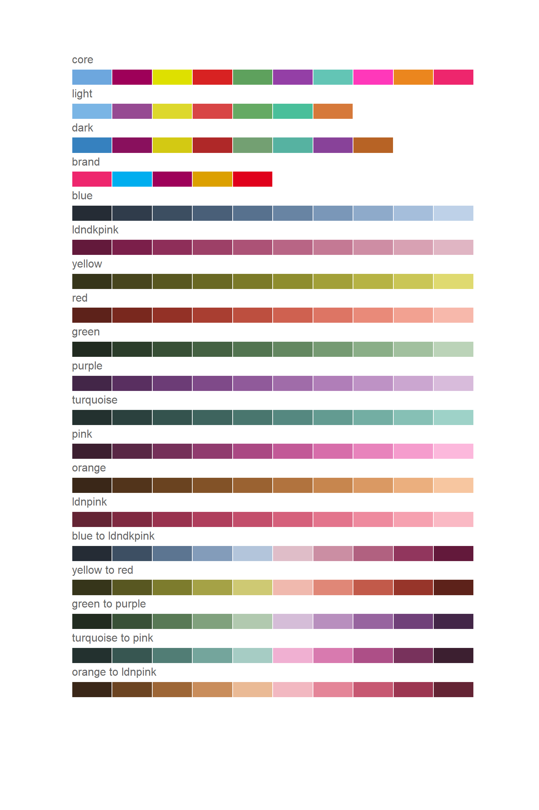

palette_type
The available palette types are:
-
categorical - to be used for nominal categorical data - data has categories which don’t have a natural ordering.
-
quantitative - to be used for numerical or ordinal categorical data which has a natural ordering.
-
highlight - to be used where you want to highlight one (or more) type/category of data against some other context data. E.g. London vs rest of UK.
-
diverging - to be used for numerical or ordinal categorical data which has a natural ordering that goes through 0.
To get maximum control over which colours are assigned to which values, convert your variables to factors (including numerical data, convert any continuous values into categories).
palette_name
There are 4 different palettes included in the package:
-
core - the default palette.
-
light - less saturated, less contrasting, lighter variations
-
dark - less saturated, less contrasting, darker variations
-
brand - Mayor of London brand colours
These palettes have a default order of colours which maximises differentiability and accessibility.
The different palettes can be seen here:

main_colours
The main_colours parameter should be used if you want to use a specific colour from a palette or use a palette in a non-default order.
It should be a (collection of) string(s) of one or more colours for your palette. For the different palette types this needs to be:
- categorical - should be a collection of colours matching the number of categories in your data.
- quantitative - should be one colour for the maximum value of your quantitative scale.
- highlight - should be one or more colours depending on how many data categories you want to highlight.
- diverging - should be a collection of two colours for either end of the diverging scale.
If main_colours is left as NULL colours will be selected in the default order.
n
Except for highlight palettes, n needs to be set to the number of categories in your data, and gla_pal will generate this many colours.
gla_pal(palette_type = "categorical",
palette_name = "core", n = 5)
[1] "#6da7de" "#9e0059" "#dee000" "#d82222" "#5ea15d"
gla_pal(palette_type = "quantitative",
main_colours = "green", n = 5)
[1] "#212B20" "#374F35" "#527450" "#759A72" "#A1C09E"
gla_pal(palette_type = "diverging",
main_colours = c("red", "yellow"), n = 6)
[1] "#5D221A" "#B54C3E" "#E79788" "#B2AF52" "#716F28" "#36351A"
For highlight palettes, you need to provide a vector giving the number of highlighted categories followed by the number of contextual categories.
gla_pal(palette_type = "highlight",
main_colours = c("blue", "yellow"), n = c(2, 3))
[1] "#6da7de" "#dee000" "#cccccc" "#cccccc" "#cccccc"
inc0
This is only relevant for diverging or quantitative colour palettes, if you want to explicitly include 0 in your colour scale (i.e. for a diverging palette you have a colour in the middle of the palette that is completely neutral between to two ends of the scale) then set inc0 = TRUE and this colour will be included in the middle or end of the palette. n colours will still be returned.
gla_pal(gla_theme = "default", palette_type = "diverging",
main_colours = c("red", "yellow"), n = 7, inc0 = TRUE)
[1] "#5D221A" "#B54C3E" "#E79788" "#EEEEEE" "#B2AF52" "#716F28" "#36351A"
remove_margin
This is only relevant for diverging or quantitative colour palettes. If you want to reduce the overall range of lightness-darkness in the colours you can remove the margin of the palette on either the left, right or both sides. n colours will still be returned.
gla_pal(gla_theme = "inverse", palette_type = "diverging",
main_colours = c("red", "yellow"), n = 5, inc0 = TRUE,
remove_margin = "both")
[1] "#373333" "#353333" "#333333" "#333333" "#343433"
Note: For diverging palettes, n must be either odd or even depending on the combination of inc0 and remove_margin used.